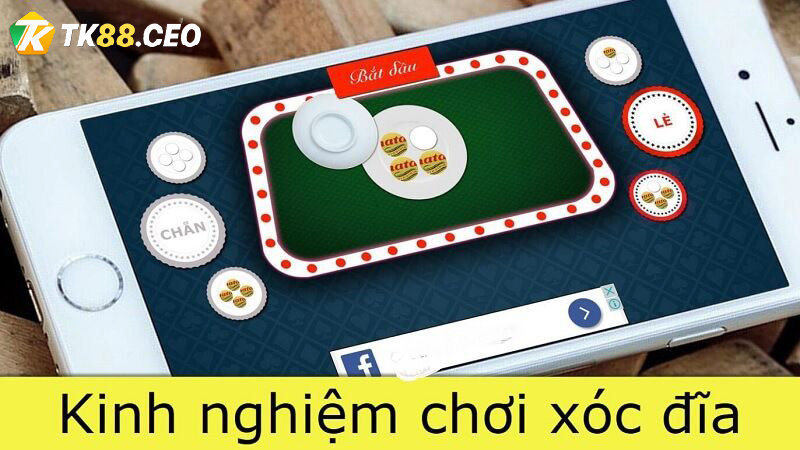

CASINO
TOP kinh nghiệm kiếm tiền từ game xóc đĩa của cao thủ
Xóc đĩa là trò chơi đổi thưởng không còn quá xa lạ với anh em đam mê cá cược trực tuyến. Với cách chơi dễ dàng mà cách thức nhận thưởng đơn giản nên thu hút đông đảo người chơi. Vậy làm thế nào để có thể chơi xóc đĩa luôn thắng tại nhà cái TK88? Mời bạn đọc tham khảo về những kinh nghiệm kiếm tiền từ game xóc đĩa được chia sẻ từ cao thủ. Đừng bỏ lỡ nếu như không muốn mất đi số tiền lớn nhé!
Tổng quan về game xóc đĩa đổi thưởng
Tổng quan về game xóc đĩa đổi thưởng
Trước hết game thủ phải hiểu rõ về cách chơi, quy luật của trò xóc đĩa đổi thưởng trực tuyến. Được
biết thì xóc đĩa là trò chơi đặt cược đổi thưởng xuất hiện tại các sòng casino. Đặc biệt từ xa xưa
hình thức chơi này thường xuất hiện tại lễ hội, dịp Tết.
Bộ dụng cụ để chơi bao gồm 1 bát, 1 đĩa và số đồng xu theo quy định. Số lượng đồng xu có thể là 2
hoặc 4 đồng với 2 mặt trắng và đỏ/đen khác nhau.
Nhà cái sẽ có nhiệm vụ là bỏ đồng xu vào bát và đĩa để xóc và không cho ai biết. Người chơi có nhiệm
vụ là đoán chính xác mặt xuất hiện của đồng xu. Khi đoán trúng thì bạn sẽ nhận được tiền thưởng theo
tỷ lệ tương ứng.
Theo kinh nghiệm kiếm tiền từ game xóc đĩa thì chơi online có nhiều ưu điểm hơn offline. Để phân
biệt và chọn cho mình cách chơi hợp lý nhất thì mời bạn tham khảo nội dung tiếp theo:
So sánh hình thức xóc đĩa truyền thống và trực tuyến Hình thức xóc đĩa offline truyền thống
Hình thức chơi này khá phổ biến và quen thuộc với lối đánh đơn giản. Người cầm cái sử dụng dụng cụ
chơi được mô tả ở trên và 1 tấm bìa đặt cược. Người tham gia sẽ đặt cược tiền sau khi nhà cái xóc
đĩa hoàn tất và chờ đợi kết quả.
Mức cược tại hình thức này đa dạng và hầu như được người cầm cái quy định. Đồng thời trò chơi không
giới hạn người tham gia và có thể chơi ở bất cứ đâu. Tuy nhiên là hình thức cờ bạc không được cho
pháp luật bảo vệ.
Nếu như bạn sử dụng tiền bạc hay tài sản tham gia thì sẽ bị phạt hành chính, truy cứu trách nhiệm
hình sự. Vì thế những nơi tổ chức thường hoạt động chui khá vắng vẻ, bí mật và bố trí người gác.
Hiện tại thì chỉ có duy nhất sòng Casino Phú Quốc là cho phép người dân chơi mà không lo phạm pháp.
>>> Xem thêm: Kinh nghiệm kiếm tiền từ game Sicbo mới nhất 2023
Xóc đĩa trực tuyến online
Kinh nghiệm kiếm tiền từ game xóc đĩa thì online là giải pháp tuyệt vời thay thế cách chơi truyền
thống. Hình thức chơi không giới hạn về lượng người chơi và khá tiện cho mọi người.
Bạn chỉ cần sở hữu một chiếc điện thoại thông minh hay máy tính kết nối mạng là được. Việc tiếp theo
là đăng ký tài khoản tại nhà cái TK88 để tham gia xóc đĩa online.
Cách chơi trực tuyến không khó vì thao tác, luật chơi và cách thức trả thưởng giống như truyền
thống. Nhà cái với trang Web thiết kế mô phỏng thực thụ. Có người thật thực hiện việc Xóc đĩa và bạn
sẽ thông qua đó theo dõi cách chơi.
Đặc biệt bạn không lo lắng về vấn đề pháp lý cũng như tính bảo mật khi chơi. Các cao thủ giàu kinh
nghiệm kiếm tiền từ game xóc đĩa rất thích loại hình này.
Song hành với đó là cách thức nạp/ rút tiền nhanh chóng, hỗ trợ tốt cùng ưu đãi khủng. vì thế mà
người chơi cá cược được nhiều người lựa chọn, tin tưởng.
Luật chơi xóc đĩa trực tuyến TK88 – Kinh nghiệm kiếm tiền từ game xóc đĩa
Luật chơi xóc đĩa trực tuyến TK88 – Kinh nghiệm kiếm
tiền từ game xóc đĩaLà một người chơi chưa biết gì về trò này thì phải nắm được luật. Trong đó thì nhà cái tiến hành bỏ đồng xu vào đĩa và thực hiện việc xóc. Người chơi dự đoán những mặt ngửa đồng xu trong khi mở bắt. Lúc bát mở ra sẽ có nhiều trường hợp khác nhau, bạn phải biết được để xem mình thắng hay thua:
- Xóc 1 đồng xu thì người chơi chỉ chọn xuất hiện mặt sấp hoặc ngửa. Trong đó thì tỷ lệ này là 50/50 cho mỗi ván cược.
- Xóc đĩa 2 đồng xu: sẽ có trường hợp 3 cửa đều là mặt sấp hoặc ngửa. Trường hợp thứ 2 là một sấp một ngửa.
- Xóc đĩa 4 đồng xu: thì loại này có khá nhiều cửa để bạn đặt cược. Chẳng hạn cược chẵn/ lẻ hoặc cược theo màu… Trong đó thì xóc đĩa 4 mặt là phổ biến nhất hiện nay.
Kinh nghiệm kiếm tiền từ game xóc đĩa là dự đoán đúng và nhận được khoảng tiền thưởng và ngược lại. Dù là với hình thức nào thì luật chơi và tiền thưởng cũng khá giống nhau.
Những thuật ngữ khi chơi xóc đĩa trực tuyến
Kinh nghiệm kiếm tiền từ game xóc đĩa là nắm được thuật ngữ trong trò chơi. Vì chúng sẽ mang các ý nghĩa nhất định. Dưới đây là những lưu ý dành cho tân thủ để tránh bỡ ngỡ khi bắt đầu. Hiện tại thì nhà cái TK88 sử dụng đồng xu với 2 mặt trắng và đỏ. Đồng thời thì sẽ sử dụng 4 đồng xu để làm chuẩn trong trò chơi và quy ước như sau:
- Tài: là kết quả 4 mặt đỏ hoặc 3 đỏ + 1 trắng.
- Xỉu: là kết quả 4 mặt trắng hoặc 3 trắng + 1 đỏ.
- Chẵn: là kết quả 4 đỏ, 4 trắng hoặc là 2 đỏ + 2 trắng.
- Lẻ: là kết quả 3 mặt trắng + 1 đỏ hoặc ngược lại.
Đây chính là các cửa sẽ xuất hiện ở mỗi ván cược chơi xóc đĩa. Nếu như kết quả trùng với cửa mà bạn đã chọn thì bạn sẽ thắng cược ván đó.
Kinh nghiệm kiếm tiền từ game xóc đĩa online
Kinh nghiệm kiếm tiền từ game xóc đĩa online
Mặc dù xóc đĩa online là trò chơi khá đơn giản nhưng muốn thắng bạn phải có hiểu biết, kinh nghiệm. Vì thế khi áp dụng thành công kinh nghiệm kiếm tiền từ game xóc đĩa online dưới đây đảm bảo bạn sẽ thắng!
Điềm tĩnh quan sát trước khi tham gia chơi
Một kinh nghiệm kiếm tiền từ game xóc đĩa trực tuyến mà cao thủ chia sẻ là quan sát
trước khi chơi.
Việc này sẽ giúp bạn biết được nhà cái có hay không đang gian lận trong trò chơi.
Một kết quả bình thường là chẵn/ lẻ ngẫu nhiên. Người chơi quan sát các ván và không phát hiện điểm
bất thường thì có thể an tâm. Lúc này thì bạn hãy sử dụng kỹ năng của mình để thực hiện việc đặt
cược tại trò xóc đĩa online.
Một kết quả nhiều nghi vấn là chẳng hạn xuất hiện liên tiếp 7 lần lẻ hoặc 7 lần chẵn. Lúc này thì
đừng ngần ngại mà đổi ngay nhà cái khác tham gia nhé!
Kinh nghiệm kiếm tiền từ game xóc đĩa là biết điểm dừng
Một điều mà mọi game thủ đều biết nhưng hầu như là đều áp dụng không thành công là không
biết dừng. Biết điểm dừng nghĩa là khi thắng quá nhiều hoặc thua quá nhiều thì phải dừng lại ngay.
Hẹn lại một ngày bình ổn hãy chơi lại để tránh rơi vào bẫy nhà cái.
Dựa vào kinh nghiệm kiếm tiền từ game xóc đĩa bởi các cao thủ là nhà cái thường cho bạn ăn ở những
ván đầu. Sau đó thì dần dà nhử mồi lấy lại toàn bộ tiền trước đó.
Trường hợp thua quá nhiều thì bạn hãy dừng lại và bình tĩnh thoát game. Tuyệt đối không chơi tiếp
với tâm thế gỡ gạc vì chỉ có càng chơi càng thua.
Biết cách ngắt quãng trong trò chơi – Kinh nghiệm kiếm tiền từ game xóc đĩa
Một hình thức lão luyện trong làng xóc đĩa là cách ngắt quãng. Đầu tiên thì bạn chỉ chơi vài ván và dừng lại nghỉ ngơi để quan sát kết quả mới quyết định chơi tiếp. Việc này không chỉ giúp bạn thư giãn mà có thể tính toán lối chơi tốt.

Bắt đầu bằng việc soi cầu – Kinh nghiệm kiếm tiền từ game xóc đĩa xóc đĩa
rong xóc đĩa online có quy luật soi cầu mà bạn cần quan sát thật kỹ trước khi chơi. Bạn phải quan sát để nắm được quy luật chung và soi cầu chuẩn xác. Chiến thuật này cần thời gian, sự tích lũy mới có thể thành công. Đồng thời chiến thuật này sẽ hiệu quả và mang lại xác suất thắng rất lớn.
Lập kế hoạch quản lý vốn là kinh nghiệm kiếm tiền từ game xóc đĩa
Người chơi cần lập ra một kế hoạch quản lý số vốn rõ ràng, chi tiết nhất. Trò chơi chia
thành nhiều ván cược để bạn chơi. Ở mỗi cửa, mỗi ván cần có tiền vốn linh động để thu về nguồn lợi
cao nhất.
Thông người người chơi mới hay mắc sai lầm và đặt quá nhiều vào một cửa. Việc đặt theo quán tính,
không có sự suy tính, cân nhắc sẽ dẫn đến kết quả thua trắng tay.
Mấu chốt là bạn học cách lập kế hoạch, quản lý tiền vốn để đạt được hiệu quả nhất. Đồng thời hãy
chia nhỏ tiền cược mà không cần đặt quá lớn, chỉ nên vừa đủ. Với newbie hay người chơi lâu năm có
máu chiến “sát phạt” thì kế hoạch quản lý vốn là cần thiết. Đồng thời không được nóng vội mà cần
thời gian mới thành công.
Không quá tin tưởng vào một cửa cược – Kinh nghiệm kiếm tiền từ game xóc đĩa
Nếu không áp dụng chiến lược gấp thép thì bạn không nên tin tưởng vào một cửa duy nhất.
Kinh nghiệm kiếm tiền từ game xóc đĩa được cao thủ chia sẻ là tỷ lệ thắng cửa chẵn/ lẻ là ngang
nhau. Tuy nhiên không có nghĩa cứ đặt một cửa là sẽ không ảnh hưởng đến những lần khác.
Vì thế nếu bạn đặt mãi một cửa là đang tự hại chính mình. Hãy căn cứ từng trường hợp mà thay đổi
tiền cược sao cho hợp lý. Ví dụ bạn bám cầu chạy dài để ăn là một ý tưởng không tồi nhé!
Áp dụng chiến thuật cược gấp thép
Các cao thủ trong làng xóc đĩa online truyền tai nhau về chiến thuật gấp thép mang lại
tỷ lệ thắng cao. Kỹ thuật này áp dụng nhưng phải thật là khéo léo. Đầu tên bạn chuẩn bị cho mình số
vốn dồi dào cũng như xác định cửa cược.
Kinh nghiệm kiếm tiền từ game xóc đĩa là nếu thua thì nhân đôi tiền cược và đặt vào cửa đó. Tiếp tục
áp dụng cách gấp thép thì sẽ không bị lỗ vốn hoặc lỗ vốn thấp.
Tuy nhiên thì đây cũng là cách chơi như con dao hai lưỡi. Tỷ lệ thắng cao thì đi đôi với rủi ro nhận
về cũng lớn. Nếu như không đảm bảo nguồn vốn thì bạn càng đánh càng thua. Hoặc là chưa chờ đến hắng
thì vốn đã hết sạch.
Học cách lắng nghe tiếng xóc đĩa tại nhà cái TK88

Học cách lắng nghe tiếng xóc đĩa tại nhà cái TK88 – Kinh nghiệm kiếm tiền từ game xóc đĩa
Một kinh nghiệm kiếm tiền từ game xóc đĩa đổi thưởng là lắng nghe tiếng xóc để xác định kết quả.
Cách này cần được rèn luyện, thời gian thì mới có thể thành công và được cao thủ ưu tiên chọn.
Đầu tiên người chơi quan sát các mặt chẵn/ lẻ của đồng xu khi đặt vào đĩa. Sau đó chú ý quan sát
số lần xóc, động tác cũng như âm thanh khi xóc. Phải lắng nghe mới có thể rút ra những điểm
giống và khác nhau của các lần đó.
Những cao thủ chia sẻ nếu như dùng lực, số lần xóc, thao tác như nhau thì tỷ lệ 80% kết quả
tương đồng. Từ đó bạn sẽ có thể đặt vào cửa cược mà mình chọn qua các lần trước đó.
Quan sát tay của Dealer và lực đạo sử dụng của họ. Nếu lực mạnh, yếu thì chú ý kết quả để đặt
vào những lần sau.
Các đồng xu đặt xa nhau thì lực va chạm ít hơn và tạo ra âm thanh khác. Từ đó bạn so sánh để tìm
ra mối liên kết âm thanh và kết quả mở bát.
Chơi tại nhà cái uy tín như TK88 – Kinh nghiệm kiếm tiền từ game xóc đĩa
Một yếu tố quan trọng khi tham gia xóc đĩa trực tuyến là chọn nhà cái uy tín trên thị trường. Một
nhà cái hoạt động hợp pháp thì bạn an tâm trong khi đặt cược. Nhà cái TK88 được sự bảo trợ của chính
phủ Philippines. Mọi giao dịch được thực hiện bởi tổ chức tài chính quốc tế.
Đồng thời giao dịch được thực hiện nhanh chóng, an toàn và tiện lợi. Mọi thông tin của game thủ đều
được bảo mật tuyệt đối và không một ai có thể tra ra thông tin. Đặc biệt là có bộ phận hỗ trợ khách
hàng 24/7 đảm bảo giải quyết mọi vấn đề cho người chơi.
Hy vọng rằng những thông tin trên về kinh nghiệm kiếm tiền từ game xóc đĩa mang lại hữu ích cho game
thủ. Là một người mới thì bạn nên áp dụng những lưu ý ở trên trong mỗi lần chơi xóc đĩa tại TK88.
Chúc bạn nhận được khoảng tiền thưởng khủng trong quá trình chơi.
>>> Xem thêm: TOP kinh nghiệm kiếm tiền từ game Poker dành cho game thủ


BÀI VIẾT MỚI
30 Th1
Nhận thưởng khi thắng xổ số liên tiếp – Ưu đãi hấp dẫn TK88
Chức năng bình luận bị tắt
29 Th1
Khuyến mãi liền tay: Dự đoán bóng đá mùa giải 2023 – 2024
Chức năng bình luận bị tắt
29 Th1
Nhận 300K chơi miễn phí ngay tại nhà cái TK88
Chức năng bình luận bị tắt
28 Th1
Hoàn trả 100% cược thể thao cho lần thua đầu
Chức năng bình luận bị tắt
27 Th1
Khuyến mãi Hoàn trả 0,5% cho trò chơi siêu tốc TK88
Chức năng bình luận bị tắt
DANH MỤC CHÍNH
- Trang chủ
- Giới thiệu
- Xổ Số
- Thể Thao
- Live Casino
- Bắn Cá
- Đua Ngựa
- Đá gà
- Game slot
- Game bài
- Hướng Dẫn
- Khuyến Mãi